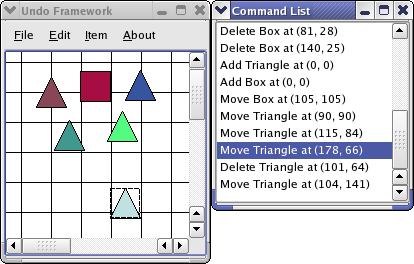

Undo Framework Example
This example shows how to implement undo/redo functionality with the Qt undo framework.

In the Qt undo framework, all actions that the user performs are implemented in classes that inherit QUndoCommand. An undo command class knows how to both redo() - or just do the first time - and undo() an action. For each action the user performs, a command is placed on a QUndoStack. Since the stack contains all commands executed (stacked in chronological order) on the document, it can roll the state of the document backwards and forwards by undoing and redoing its commands. See the overview document for a high-level introduction to the undo framework.
The undo example implements a simple diagram application. It is possible to add and delete items, which are either box or rectangular shaped, and move the items by dragging them with the mouse. The undo stack is shown in a QUndoView, which is a list in which the commands are shown as list items. Undo and redo are available through the edit menu. The user can also select a command from the undo view.
We use the graphics view framework to implement the diagram. We only treat the related code briefly as the framework has examples of its own (e.g., the Diagram Scene Example).
The example consists of the following classes:
MainWindowis the main window and arranges the example's widgets. It creates the commands based on user input and keeps them on the command stack.AddCommandadds an item to the scene.DeleteCommanddeletes an item from the scene.MoveCommandwhen an item is moved the MoveCommand keeps record of the start and stop positions of the move, and it moves the item according to these whenredo()andundo()is called.DiagramSceneinherits QGraphicsScene and emits signals for theMoveComandswhen an item is moved.DiagramIteminherits QGraphicsPolygonItem and represents an item in the diagram.
MainWindow Class Definition
class MainWindow : public QMainWindow { Q_OBJECT public: MainWindow(); public slots: void itemMoved(DiagramItem *movedDiagram, const QPointF &moveStartPosition); private slots: void deleteItem(); void addBox(); void addTriangle(); void about(); void updateActions(); private: void createActions(); void createMenus(); void createToolBars(); void createUndoView(); QAction *deleteAction = nullptr; QAction *addBoxAction = nullptr; QAction *addTriangleAction = nullptr; QAction *undoAction = nullptr; QAction *redoAction = nullptr; QAction *exitAction = nullptr; QAction *aboutAction = nullptr; QMenu *fileMenu = nullptr; QMenu *editMenu = nullptr; QMenu *itemMenu = nullptr; QMenu *helpMenu = nullptr; DiagramScene *diagramScene = nullptr; QUndoStack *undoStack = nullptr; QUndoView *undoView = nullptr; };
The MainWindow class maintains the undo stack, i.e., it creates QUndoCommands and pushes and pops them from the stack when it receives the triggered() signal from undoAction and redoAction.
MainWindow Class Implementation
We will start with a look at the constructor:
MainWindow::MainWindow() { undoStack = new QUndoStack(this); diagramScene = new DiagramScene(); const QBrush pixmapBrush(QPixmap(":/icons/cross.png").scaled(30, 30)); diagramScene->setBackgroundBrush(pixmapBrush); diagramScene->setSceneRect(QRect(0, 0, 500, 500)); createActions(); createMenus(); createToolBars(); createUndoView(); connect(diagramScene, &DiagramScene::itemMoved, this, &MainWindow::itemMoved); connect(diagramScene, &DiagramScene::selectionChanged, this, &MainWindow::updateActions); setWindowTitle("Undo Framework"); QGraphicsView *view = new QGraphicsView(diagramScene); setCentralWidget(view); adjustSize(); }
In the constructor, we set up the DiagramScene and QGraphicsView. We only want deleteAction to be enabled when we have selected an item, so we connect to the selectionChanged() signal of the scene to updateActions() slot.
Here is the createUndoView() function:
void MainWindow::createUndoView() { QDockWidget *undoDockWidget = new QDockWidget; undoDockWidget->setWindowTitle(tr("Command List")); undoDockWidget->setWidget(new QUndoView(undoStack)); addDockWidget(Qt::RightDockWidgetArea, undoDockWidget); }
The QUndoView is a widget that display the text, which is set with the setText() function, for each QUndoCommand in the undo stack in a list. We put it into a docking widget.
Here is the createActions() function:
void MainWindow::createActions() { deleteAction = new QAction(QIcon(":/icons/remove.png"), tr("&Delete Item"), this); deleteAction->setShortcut(tr("Del")); connect(deleteAction, &QAction::triggered, this, &MainWindow::deleteItem); ... undoAction = undoStack->createUndoAction(this, tr("&Undo")); undoAction->setIcon(QIcon(":/icons/undo.png")); undoAction->setShortcuts(QKeySequence::Undo); redoAction = undoStack->createRedoAction(this, tr("&Redo")); redoAction->setIcon(QIcon(":/icons/redo.png")); redoAction->setShortcuts(QKeySequence::Redo);
The createActions() function sets up all the examples actions in the manner shown above. The createUndoAction() and createRedoAction() methods help us create actions that are disabled and enabled based on the state of the stack. Also, the text of the action will be updated automatically based on the text() of the undo commands. For the other actions we have implemented slots in the MainWindow class.
...
updateActions();
}
void MainWindow::updateActions()
{
deleteAction->setEnabled(!diagramScene->selectedItems().isEmpty());
}
Once all actions are created we update their state by calling the same function that is connected to the selectionChanged signal of the scene.
The createMenus() and createToolBars() functions add the actions to menus and toolbars:
void MainWindow::createMenus() { fileMenu = menuBar()->addMenu(tr("&File")); fileMenu->addAction(exitAction); editMenu = menuBar()->addMenu(tr("&Edit")); editMenu->addAction(undoAction); editMenu->addAction(redoAction); editMenu->addSeparator(); editMenu->addAction(deleteAction); ... helpMenu = menuBar()->addMenu(tr("&About")); helpMenu->addAction(aboutAction); } void MainWindow::createToolBars() { QToolBar *editToolBar = new QToolBar; editToolBar->addAction(undoAction); editToolBar->addAction(redoAction); editToolBar->addSeparator(); editToolBar->addAction(deleteAction); ... addToolBar(editToolBar); addToolBar(itemToolBar); }
Here is the itemMoved() slot:
void MainWindow::itemMoved(DiagramItem *movedItem, const QPointF &oldPosition) { undoStack->push(new MoveCommand(movedItem, oldPosition)); }
We simply push a MoveCommand on the stack, which calls redo() on it.
Here is the deleteItem() slot:
void MainWindow::deleteItem() { if (diagramScene->selectedItems().isEmpty()) return; QUndoCommand *deleteCommand = new DeleteCommand(diagramScene); undoStack->push(deleteCommand); }
An item must be selected to be deleted. We need to check if it is selected as the deleteAction may be enabled even if an item is not selected. This can happen as we do not catch a signal or event when an item is selected.
Here is the addBox() slot:
void MainWindow::addBox() { QUndoCommand *addCommand = new AddCommand(DiagramItem::Box, diagramScene); undoStack->push(addCommand); }
The addBox() function creates an AddCommand and pushes it on the undo stack.
Here is the addTriangle() sot:
void MainWindow::addTriangle() { QUndoCommand *addCommand = new AddCommand(DiagramItem::Triangle, diagramScene); undoStack->push(addCommand); }
The addTriangle() function creates an AddCommand and pushes it on the undo stack.
Here is the implementation of about():
void MainWindow::about() { QMessageBox::about(this, tr("About Undo"), tr("The <b>Undo</b> example demonstrates how to " "use Qt's undo framework.")); }
The about slot is triggered by the aboutAction and displays an about box for the example.
AddCommand Class Definition
class AddCommand : public QUndoCommand { public: AddCommand(DiagramItem::DiagramType addType, QGraphicsScene *graphicsScene, QUndoCommand *parent = nullptr); ~AddCommand(); void undo() override; void redo() override; private: DiagramItem *myDiagramItem; QGraphicsScene *myGraphicsScene; QPointF initialPosition; };
The AddCommand class adds DiagramItem graphics items to the DiagramScene.
AddCommand Class Implementation
We start with the constructor:
AddCommand::AddCommand(DiagramItem::DiagramType addType, QGraphicsScene *scene, QUndoCommand *parent) : QUndoCommand(parent), myGraphicsScene(scene) { static int itemCount = 0; myDiagramItem = new DiagramItem(addType); initialPosition = QPointF((itemCount * 15) % int(scene->width()), (itemCount * 15) % int(scene->height())); scene->update(); ++itemCount; setText(QObject::tr("Add %1") .arg(createCommandString(myDiagramItem, initialPosition))); }
We first create the DiagramItem to add to the DiagramScene. The setText() function let us set a QString that describes the command. We use this to get custom messages in the QUndoView and in the menu of the main window.
void AddCommand::undo() { myGraphicsScene->removeItem(myDiagramItem); myGraphicsScene->update(); }
undo() removes the item from the scene.
void AddCommand::redo() { myGraphicsScene->addItem(myDiagramItem); myDiagramItem->setPos(initialPosition); myGraphicsScene->clearSelection(); myGraphicsScene->update(); }
We set the position of the item as we do not do this in the constructor.
DeleteCommand Class Definition
class DeleteCommand : public QUndoCommand { public: explicit DeleteCommand(QGraphicsScene *graphicsScene, QUndoCommand *parent = nullptr); void undo() override; void redo() override; private: DiagramItem *myDiagramItem; QGraphicsScene *myGraphicsScene; };
The DeleteCommand class implements the functionality to remove an item from the scene.
DeleteCommand Class Implementation
DeleteCommand::DeleteCommand(QGraphicsScene *scene, QUndoCommand *parent) : QUndoCommand(parent), myGraphicsScene(scene) { QList<QGraphicsItem *> list = myGraphicsScene->selectedItems(); list.first()->setSelected(false); myDiagramItem = static_cast<DiagramItem *>(list.first()); setText(QObject::tr("Delete %1") .arg(createCommandString(myDiagramItem, myDiagramItem->pos()))); }
We know that there must be one selected item as it is not possible to create a DeleteCommand unless the item to be deleted is selected and that only one item can be selected at any time. The item must be unselected if it is inserted back into the scene.
void DeleteCommand::undo() { myGraphicsScene->addItem(myDiagramItem); myGraphicsScene->update(); }
The item is simply reinserted into the scene.
void DeleteCommand::redo() { myGraphicsScene->removeItem(myDiagramItem); }
The item is removed from the scene.
MoveCommand Class Definition
class MoveCommand : public QUndoCommand { public: enum { Id = 1234 }; MoveCommand(DiagramItem *diagramItem, const QPointF &oldPos, QUndoCommand *parent = nullptr); void undo() override; void redo() override; bool mergeWith(const QUndoCommand *command) override; int id() const override { return Id; } private: DiagramItem *myDiagramItem; QPointF myOldPos; QPointF newPos; };
The mergeWith() is reimplemented to make consecutive moves of an item one MoveCommand, i.e, the item will be moved back to the start position of the first move.
MoveCommand Class Implementation
The constructor of MoveCommand looks like this:
MoveCommand::MoveCommand(DiagramItem *diagramItem, const QPointF &oldPos, QUndoCommand *parent) : QUndoCommand(parent), myDiagramItem(diagramItem) , myOldPos(oldPos), newPos(diagramItem->pos()) { }
We save both the old and new positions for undo and redo respectively.
void MoveCommand::undo() { myDiagramItem->setPos(myOldPos); myDiagramItem->scene()->update(); setText(QObject::tr("Move %1") .arg(createCommandString(myDiagramItem, newPos))); }
We simply set the items old position and update the scene.
void MoveCommand::redo() { myDiagramItem->setPos(newPos); setText(QObject::tr("Move %1") .arg(createCommandString(myDiagramItem, newPos))); }
We set the item to its new position.
bool MoveCommand::mergeWith(const QUndoCommand *command) { const MoveCommand *moveCommand = static_cast<const MoveCommand *>(command); DiagramItem *item = moveCommand->myDiagramItem; if (myDiagramItem != item) return false; newPos = item->pos(); setText(QObject::tr("Move %1") .arg(createCommandString(myDiagramItem, newPos))); return true; }
Whenever a MoveCommand is created, this function is called to check if it should be merged with the previous command. It is the previous command object that is kept on the stack. The function returns true if the command is merged; otherwise false.
We first check whether it is the same item that has been moved twice, in which case we merge the commands. We update the position of the item so that it will take the last position in the move sequence when undone.
DiagramScene Class Definition
class DiagramScene : public QGraphicsScene { Q_OBJECT public: DiagramScene(QObject *parent = nullptr); signals: void itemMoved(DiagramItem *movedItem, const QPointF &movedFromPosition); protected: void mousePressEvent(QGraphicsSceneMouseEvent *event) override; void mouseReleaseEvent(QGraphicsSceneMouseEvent *event) override; private: QGraphicsItem *movingItem = nullptr; QPointF oldPos; };
The DiagramScene implements the functionality to move a DiagramItem with the mouse. It emits a signal when a move is completed. This is caught by the MainWindow, which makes MoveCommands. We do not examine the implementation of DiagramScene as it only deals with graphics framework issues.
The main() Function
The main() function of the program looks like this:
int main(int argv, char *args[]) { QApplication app(argv, args); MainWindow mainWindow; mainWindow.show(); return app.exec(); }
We draw a grid in the background of the DiagramScene, so we use a resource file. The rest of the function creates the MainWindow and shows it as a top level window.